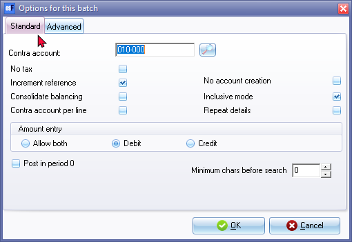
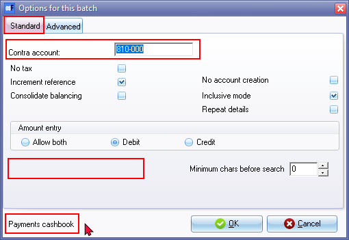

F10:Batch setup - Standard tab
osFinancials5 allows you to set the Standard options for each batch or journal to make the entering and processing of transactions easier, faster and more accurate.

The options are as follows:
- Contra account - Select the default balancing account contra account for the batch. When you balance the batch, osFinancials5 will generate the balancing transaction to the contra account for the total amount of all the transactions for each date.
|
|
For example in the SALES JOURNAL you would set up the contra account to be the SALES account and enter all the DEBIT transactions for the various debtors. When you balance the batch, osFinancials 5 generates CREDIT transactions to the SALES account. |

|
|
In the case of the Payments and Receipts journal, the contra account is always the Bank account and cannot be changed.  Post in period 0 - This option is not available for the Payments and Receipts journal. since you will not be allowed to post transactions for opening balances. If you need to take-on the opening balances for bank accounts, you need to process the opening balances in a normal batch type, e.g. "General journal". |

- No Tax - Hide the Tax column in the batch or journal entry screen as well as the Tax account lookup (Search). This option should only be used if no VAT/GST/Sales Tax is applicable to all transactions entered in the batch or journal or if the user is not registered as a VAT/GST/Sales Tax Vendor. However, there may be certain transactions, such as opening balances, depreciation transactions, or other non-taxable transactions, where VAT/GST/Sales Tax is not applicable. In such cases, you have the option to disable the Tax feature in the batch.
By disabling the Tax in the batch, the tax account lookup will be hidden, indicating that no tax is applicable to any of the transactions within the batch. This eliminates the need to specify tax treatment for each individual transaction and streamlines the data entry process for non-taxable transactions.
|
|
Some examples of transactions where VAT/GST/Sales Tax may not be applicable:
These are just a few examples where VAT/GST/Sales Tax may not be applicable. The key is to identify transactions that are not related to the sale or purchase of goods or services to external parties. By selecting the appropriate tax treatment, or disabling the tax feature altogether, you can ensure accurate tax calculations and reporting for the transactions where VAT/GST/Sales Tax is applicable and streamline the data entry process for non-taxable transactions. |
- Increment reference - If the Reference number of most of the transactions are the same, you may leave the setting for this option blank. When proceeding to the next line, the previous line's reference number will be blank. You may over type these, if necessary.
If the Reference number of most of the transactions are following in a sequence (e.g. payment numbers, invoice numbers, etc.), you may select (tick) this option. When proceeding to the next line, the previous line's reference number will be repeated. You may over type the next reference number, if necessary (for example if more than 1 item is purchases on the same cheque or payment number and need to be allocated to different accounts).
- Consolidate balancing - If you select (tick) this option, the balancing entries generated (when you click on the F5:Balance icon), will be grouped to the balancing entry by date.
|
|
The Tax report (Reports → Tax) does not include the Sales journal. It only includes Sales documents (i.e. Invoices an Credit notes). Transactions on other Batch types may cause similar errors. The reason for this, is the Consolidate balancing option on the Standard tab - F10:Setup on the Options for this batch screen. When setting up the batch, an information message will be displayed. "Consolidating lines and using tax will mess up your tax report! Please make sure you do not use tax or do not consolidate lines!" Click on the OK button and click on the F10:Setup icon and deselect (remove the tick) from the Consolidate balancing field on the Standard tab of the "Options for this batch" screen. Balance the batch again. |

- Contra account per line - If you select (tick) this option, each time you select an account, you to also need to select a contra account. In this way you can select a different contra account for each transaction. When you balance the batch, osFinancials 5 will generate all the transactions to each of these contra accounts.
- Inclusive mode - Select (tick) to enter amounts in the inclusive mode. If not selected (not) ticked, the default for entering amounts, is exclusive.
- Repeat details - If the descriptions of most of the transactions are of a repeating nature, you may select (tick) this option. When proceeding to the next line, the previous line's descriptions will be repeated. You may over type these, if necessary.
|
|
If Abbreviation definitions are set, you may type a character or a few characters to auto-complete the descriptions. |
- Amount entry - This setting allows you to enable or block amount entry in the debit and/or credit columns of batches. You may select Allow Both (enter amounts in both the debit and credit column), Debit (enter amounts in the debit column only) or Credit (enter amounts in the credit column only). The recommended amount entry and lookup type settings for batch types, is as follows:
|
BATCH TYPES |
Lookup Type |
Contra account lookup type |
DEBIT /CREDIT |
|
Sales journal |
Debtors |
General ledger |
Debit |
|
Sales returns |
General ledger |
Debtors |
Credit |
|
Purchases |
General ledger |
Creditors |
Credit |
|
Purchase returns |
Creditors |
General ledger |
Debit |
|
Payments |
All |
All |
Debit |
|
Receipts |
All |
All |
Credit |
|
General journal |
All |
All |
Allow both (Debit / Credit) |
- Post in period 0 - If you need to enter opening balances in the current year (not in last year) select (tick) this option.
|
|
In the case of the Payments and Receipts batches, the Post in period 0 setting is not available. |
- Minimum chars before search - The default value is 0. If you enter one (1) invalid account code or description on the lookup, an message will be displayed, e.g.
"z Account does not exist, do you wish to create it?"
You can set the number of characters before receiving this confirmation message.
|
|
You have the option to click No and select another account. If you click Yes, you have the options to create a new account for a selected account type (i.e. ledger, bank, tax, debtor or creditor. |